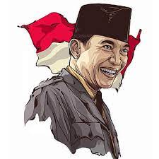
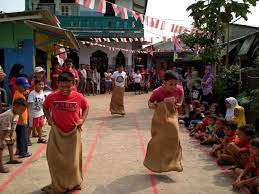
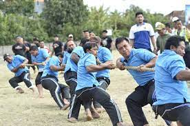

.png)
Menurut sejarawan JJ Rizal, tradisi keseruan lomba 17 Agustus pertama kali dilakukan 5 tahun setelah kemerdekaan Indonesia di tahun 1950. Tradisi lomba 17 Agustus juga pertama kali disusun oleh seksi pemuda atau wanita dengan bantuan koordinasi oleh ketua RT.
Tradisi ini muncul karena antusiasme masyarakat yang ingin memeriahkan perjuangan kemerdekaan Indonesia dengan cara yang menyenangkan. Saat itu, presiden pertama Indonesia, Sukarno, adalah salah satu orang yang paling bersemangat dengan lomba 17 Agustus ini. Hal itulah yang membuat tradisi lomba 17 Agustus semakin menyebar luas ke seluruh Tanah Air.Lomba-lomba yang biasa diadakan bermacam-macam, di antaranya, balap karung, panjat pinang, makan kerupuk, tarik tambang, dan sebagainya.Namun, tak hanya sebagai ajang seru-seruan, ternyata ada makna yang terkandung di balik setiap lomba 17-an tersebut. Apa saja?
Lomba panjat pinang merupakan lomba berbentuk tim, bukan individual. Setiap tim harus bergotong royong memperebutkan hadiah dengan memanjat sebuah tiang dengan beragam hadiah di puncaknya. Dulu, lomba ini diadakan sebagai hiburan dan bahan tertawaan kaum kolonial Belanda. Mereka ingin melihat masyarakat pribumi memperebutkan 'barang mewah' seperti keju, gula, dan pakaian. Pada saat masyarakat pribumi berjuang untuk mendapatkan hadiah, mereka yang menonton pun menjadikan hal itu sebagai bahan tertawaan. Lomba ini menyimbolkan perjuangan bangsa Indonesia dalam mencapai kemerdekaan.
Lomba panjat pinang merupakan lomba berbentuk tim, bukan individual. Setiap tim harus bergotong royong memperebutkan hadiah dengan memanjat sebuah tiang dengan beragam hadiah di puncaknya. Dulu, lomba ini diadakan sebagai hiburan dan bahan tertawaan kaum kolonial Belanda. Mereka ingin melihat masyarakat pribumi memperebutkan 'barang mewah' seperti keju, gula, dan pakaian. Pada saat masyarakat pribumi berjuang untuk mendapatkan hadiah, mereka yang menonton pun menjadikan hal itu sebagai bahan tertawaan. Lomba ini menyimbolkan perjuangan bangsa Indonesia dalam mencapai kemerdekaan.
Dalam lomba ini, kerupuk digantung dengan seutas tali, kemudian peserta harus memakannya tanpa boleh menggunakan tangan. Peserta yang berhasil menghabiskan lebih dulu, dialah pemenangnya. Lomba makan kerupuk menyimbolkan kesederhanaan karena kerupuk merupakan makanan yang murah dan mudah didapat.
Sama seperti panjat pinang, tarik tambang juga merupakan lomba berbentuk tim. Kedua tim akan saling tarik menarik tali tambang, lalu perlombaan akan selesai jika salah satu tim tumbang. Makna dari lomba ini adalah memperlihatkan perjuangan pahlawan yang dipaksa bekerja. Selain itu, lomba ini juga memiliki makna gotong royong, kebersamaan, dan solidaritas masyarakat Indonesia.
